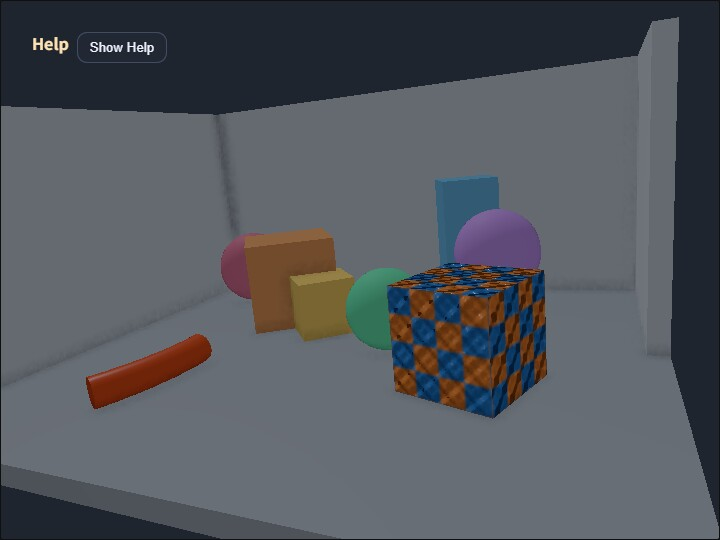

compute_ssao_gbuffer
English | 日本語

概要
webg/GeometryBufferPass.jsをlitmodeで使い、lit color、view-space normal、depthをG-bufferへ出力します。webg/SsaoPass.jsはnormal textureと周辺depthを読み、Ambient Occlusionを計算します。SsaoPassはraw AO targetだけを低解像度化でき、最終的なcolor合成はフル解像度で行います。compute_deferred_lightingとcompute_ssrと同じG-buffer生成、normal encode、depth復元規則を共有します。- GeometryBufferPassは
SpaceからShapeを収集するため、scene graphとG-bufferへ同じShapeを二重登録しません。 - 標準ShapeのSmoothShader用materialを読み、texture、normal map、skinning、ambient、specular、powerをG-bufferへ反映します。
実行方法
- 実行ファイルは ./compute_ssao_gbuffer.html です
- WebGPU に対応したブラウザで開き、必要に応じて help panel と CommandPalette と合わせて確認してください
確認ポイント
- Vでcomposite / scene / AO / normalを切り替え、G-buffer法線を確認できます。
- compute_ssaoのdepth差分法線より、object境界や平面で安定した法線を使えます。
- radius、strength、bias、sample countはcompute_ssaoと同じ意味です。
SSAO Scaleはraw AO targetの解像度倍率です。既定値は0.70で、0.50から1.00の範囲で変更できます。SSAO Scaleを下げるとraw AO生成の対象画素数が減るため、GPU負荷と表示品質のバランスを確認できます。- color、depth、normal、最終compositeはフル解像度のまま維持するため、最終画像全体を低解像度化した場合とは異なる見え方になります。
- 明るい背面壁と左右壁を配置し、床と壁、壁同士が接するcornerでAOが強くなる様子を左右で比較できます。
- 箱、球、柱、テクスチャ付きCube、skinned cylinderを少し大きくしてscene中央へ寄せ、接地部だけでなく物体同士の近接部分にも生じるAOを確認しやすくしています。
- texture付きcubeは細かなheight patternから作ったnormal mapと強いspecularを使い、表面を細分化せず凹凸のハイライトを表示します。
- 3個のsphereはspecular highlightにより滑らかな面方向を確認できます。
- skinned cylinderはroot boneを90度倒して床と平行にし、残る4関節へ曲げを分散しながらskinningと接触AOを確認します。
- alpha blend透明物は単一depth・normalでは前後面を保持できないため、不透明物と分離して扱います。
操作
9/0でSSAO Scaleを変更します。- CommandPalette の2ページ目でも
SSAO Scaleを変更できます。 - まず
SSAO Scale1.00、0.70、0.50 を比較すると、画質差とGPU負荷差を観察しやすくなります。